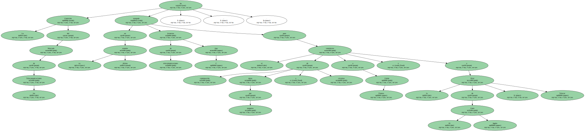
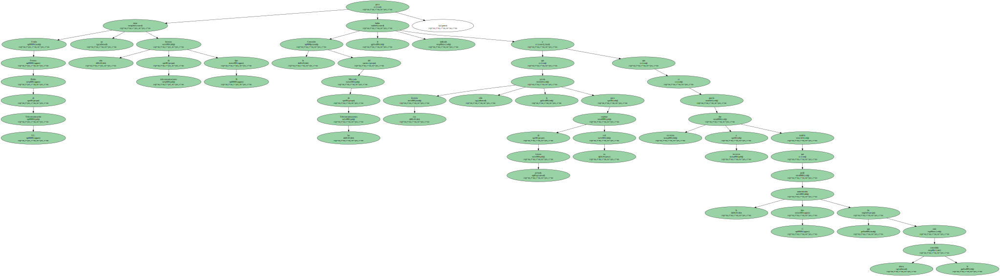
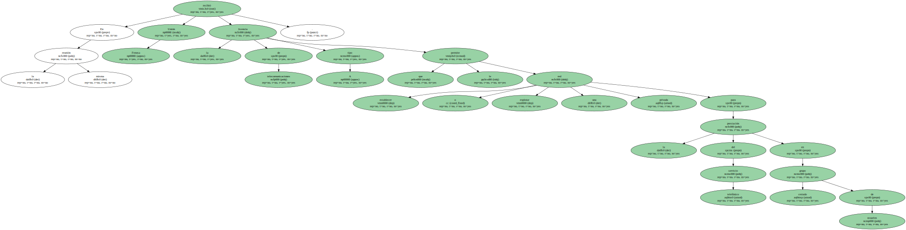

La Comisión del Mercado de las Telecomunicaciones ha otorgado , en su última reunión , licencias de telecomunicaciones tipo C para el suministro de conmutación datos por paquetes y circuitos a Unión Fenosa y a la filial de El Corte Inglés , Telecor.
Unión Fenosa Redes de Telecomunicación S.L. ya tiene una licencia de telecomunicaciones tipo B pero la Comisión del Mercado de las Telecomunicaciones le había indicado que esa licencia sólo le servía para explotar de forma privada su red y que si quería dar servicios a terceros tendría que pedir la autorización tipo C que ahora le ha sido concedida.
La licencia tipo C implica el pago de una tasa anual que no excederá del dos por mil de sus ingresos brutos de explotación.

En la misma reunión Unión Fenosa recibió la licencia de telecomunicaciones tipo A que le permite establecer o explotar una red privada para la prestación del servicio telefónico en grupo cerrado de usuarios.
